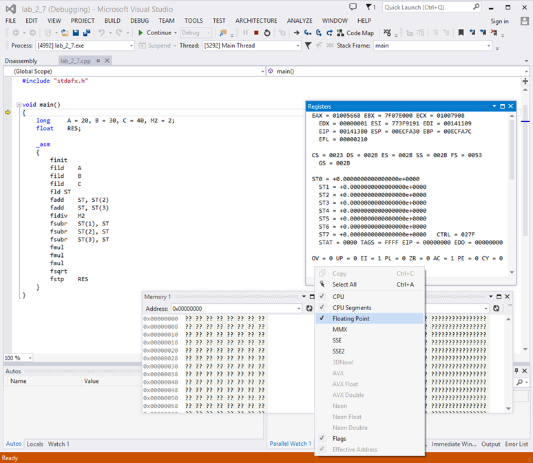
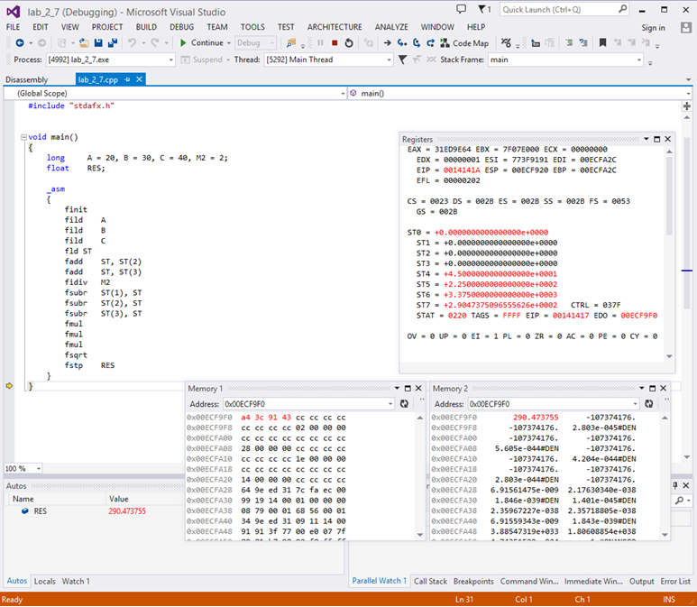

Углубление и закрепление знаний архитектуры блока вычислений с плавающей точкой FPU x87; получение практических навыков по составлению программ для FPU x87 на языке ассемблера, их отладке и выполнению.
Перед выполнением лабораторной работы студенты должны изучить регистровую модель FPU x87, форматы данных и особые случаи представления данных, ознакомиться с системой ассемблерных команд FPU (приложение Б). Выполнение заданий данной лабораторной работы предполагает наличие у студентов знаний и навыков, полученных и закрепленных в ходе выполнения лабораторной работы 2 («Архитектура прикладного уровня CPU x86-64»).
При подготовке к выполнению практических заданий следует обратить особое внимание на группы команд передачи данных, арифметические команды и команды сравнения.
С целью получения практических навыков по реализации операций FPU необходимо составить программы в соответствии с вариантом заданий (п. 3.5) и исследовать функционирование FPU, выполняя разработанную программу в пошаговом режиме (под управлением отладчика).
3.3.1 Вычислить значение функции S = (1/2)*A*B*sin(α).
3.3.2 Вычислить площадь треугольника по формуле Герона , где p – полупериметр треугольника.
3.3.3 Определить номер (n) элемента последовательности an = 5,3^n + 5*n, при котором сумма элементов превысит 20000.
3.3.4 Вычислить функцию Y = 5 * arcSin ((tg 60°)2/ 7). Результат перевести в градусы.
3.3.5 Возведение основания 2 в произвольную степень.
Выполнение работы состоит в разработке, отладке и выполнении ассемблерных программ для FPU x87 в среде разработки Visual C++. Основные этапы работы в среде Visual C++ рассмотрены в лабораторной работе 2 (п. 2.4).
Программы выполняются в пошаговом режиме (под управлением отладчика) с одновременным контролем промежуточных результатов в регистровом стеке FPU. С этой целью, в окне отладки «Registers» необходимо выбрать для отображения (в дополнение к компонентам программной модели CPU) компонент «Floating Point» (рис. 3.1).
Для задания 1 необходимо построить диаграмму стека FPU на какой-либо итерации цикла выполнения программы по образцу, приведенному на рис. 3.2. Диаграмма должна отражать изменения состояния стека после каждой команды FPU. Таким образом, в нее необходимо включить команды FPU в порядке их появления в программе. Рекомендуется указывать значение мантиссы с точностью 3 разрядов после десятичной точки, значение порядка – 1 знак.
Результаты вычислений, сохраняемые в памяти, рекомендуется контролировать посредством элементов «Memory n» меню отладки «Memory» (рисунок 3.3; для представления результатов в окне «Memory 2» выбран формат «32-bit Floating Point»).
Исходные данные и результаты выполнения программ представить в десятичном (с плавающей точкой) и шестнадцатеричном форматах.

Рисунок 3.1 – Окно отладки «Registers»
| Стек FPU | Команды FPU | |||||
|---|---|---|---|---|---|---|
| finit | fild A | fild B | fild C | fld ST | fadd ST,ST(2) | |
| ST(0) | 0.000e0 | 2.000e1 | 3.000e1 | 4.000e1 | 4.000e1 | 7.000e1 |
| ST(1) | 0.000e0 | 0.000e0 | 2.000e1 | 3.000e1 | 4.000e1 | 4.000e1 |
| ST(2) | 0.000e0 | 0.000e0 | 0.000e0 | 2.000e1 | 3.000e1 | 3.000e1 |
| ST(3) | 0.000e0 | 0.000e0 | 0.000e0 | 0.000e0 | 2.000e1 | 2.000e1 |
| ST(4) | 0.000e0 | 0.000e0 | 0.000e0 | 0.000e0 | 0.000e0 | 0.000e0 |
| ST(5) | 0.000e0 | 0.000e0 | 0.000e0 | 0.000e0 | 0.000e0 | 0.000e0 |
| ST(6) | 0.000e0 | 0.000e0 | 0.000e0 | 0.000e0 | 0.000e0 | 0.000e0 |
| ST(7) | 0.000e0 | 0.000e0 | 0.000e0 | 0.000e0 | 0.000e0 | 0.000e0 |
| Тэги | FFFF | 3FFF | 0FFF | 03FF | 00FF | 00FF |
| Стек FPU | Команды FPU | |||||
|---|---|---|---|---|---|---|
| fadd ST,ST(3) | fidiv M2 | fsubr ST(1),ST | fsubr ST(2),ST | fsubr ST(3),ST | fmul | |
| ST(0) | 9.000e1 | 4.500e1 | 4.500e1 | 4.500e1 | 4.500e1 | 2.250e2 |
| ST(1) | 4.000e1 | 4.000e1 | 5.000e1 | 5.000e1 | 5.000e1 | 1.500e1 |
| ST(2) | 3.000e1 | 3.000e1 | 3.000e1 | 1.500e1 | 1.500e1 | 2.500e1 |
| ST(3) | 2.000e1 | 2.000e1 | 2.000e1 | 2.000e1 | 2.500e1 | 0.000e0 |
| ST(4) | 0.000e0 | 0.000e0 | 0.000e0 | 0.000e0 | 0.000e0 | 0.000e0 |
| ST(5) | 0.000e0 | 0.000e0 | 0.000e0 | 0.000e0 | 0.000e0 | 0.000e0 |
| ST(6) | 0.000e0 | 0.000e0 | 0.000e0 | 0.000e0 | 0.000e0 | 0.000e0 |
| ST(7) | 0.000e0 | 0.000e0 | 0.000e0 | 0.000e0 | 0.000e0 | 4.500e1 |
| Тэги | 00FF | 00FF | 00FF | 00FF | 00FF | 03FF |
| Стек FPU | Команды FPU | |||
|---|---|---|---|---|
| fmul | fmul | fsqrt | fstp RES | |
| ST(0) | 3.375e3 | 8.438e4 | 2.905e2 | 0.000e0 |
| ST(1) | 2.500e1 | 0.000e0 | 0.000e0 | 0.000e0 |
| ST(2) | 0.000e0 | 0.000e0 | 0.000e0 | 0.000e0 |
| ST(3) | 0.000e0 | 0.000e0 | 0.000e0 | 0.000e0 |
| ST(4) | 0.000e0 | 0.000e0 | 0.000e0 | 4.500e1 |
| ST(5) | 0.000e0 | 4.500e1 | 4.500e1 | 2.250e2 |
| ST(6) | 4.500e1 | 2.250e2 | 2.250e2 | 3.375e3 |
| ST(7) | 2.250e2 | 3.375e3 | 3.375e3 | 2.905e2 |
| Тэги | 0FFF | 3FFF | 3FFF | FFFF |
Рисунок 3.2 – Изменение стека FPU

Рисунок 3.3 – Выбор областей памяти
Вариант 1. Вычислить 6 значений функции Y = 3,5 * x^2 + 7,2 * x (х изменяется от 4,5 с шагом 3). Результат округлить до целого и разместить в памяти.
Вариант 2. Вычислить 5 значений суммы элементов последовательности an = 2,5 * n^2 + 5,3 (для n от 4 с шагом 1). Результат разместить в памяти в целом формате.
Вариант 3. Вычислить 7 значений функции Y = 2500 / (2 * х^2 + 3,7) (х изменяется от 3 с шагом 2,5). Результат округлить до целого и разместить в памяти.
Вариант 4. Вычислить 6 значений функции Y = (14 * x + 5,6)^(1/2) (x изменяется от 6 с шагом 3). Результат разместить в памяти.
Вариант 5. Вычислить 6 значений функции Y = (20 * x) / (5 * x^2 – 8,5) (x изменяется от 1 с шагом 4). Результат разместить в памяти.
Вариант 6. Вычислить 6 значений суммы элементов последовательности an = (4,5^n) / (n + 5) (для n от 1 с шагом 1). Результат округлить до целого и разместить в памяти.
Вариант 7. Вычислить 5 значений функции Y = (x - 7) / [(x + 20)^(1/2)] (x изменяется от 3 с шагом 2,5). Результат разместить в памяти.
Вариант 8. Вычислить 6 значений функции Y = 1024 / (3,2 * x^2 – 25), (x изменяется от 2 с шагом 2). Результат разместить в памяти.
Вариант 9. Вычислить 5 значений суммы суммы элементов последовательности an = 418 / (2 * n^2 + 7,3), (для n от 1 с шагом 1). Результат разместить в памяти.
Вариант 10. Вычислить 6 значений функции Y = 3000 / (x^2 + 3,6 * x – 7,5), (x изменяется от 2 с шагом 2,7). Результат разместить в памяти.
Вариант 1. Найти целое значение аргумента, при котором функция Y = 20 / (x^2 + 2,5^x) станет меньше 0,2.
Вариант 2. Найти целое значение аргумента х, при котором функция Y = 15 / (x^2 + 3,7) станет меньше 0,1 (для х от 1 с шагом 1).
Вариант 3. Определить номер (n) элемента последовательности an = 2,5 * n2 + 7,3, при котором сумма элементов последовательности превысит 1000.
Вариант 4. Определить номер (n) элемента последовательности an = 3,3^n + 5, при котором сумма элементов последовательности превысит 15000.
Вариант 5. Задан массив с элементами a(i) = sin (5 * i). Определить номер элемента массива, при котором сумма элементов превысит 3. Аргумент синуса задан в градусах.
Вариант 6. Найти целое значение аргумента, при котором функция Y = (2,5 * x + 10)^(1/2) превысит 100.
Вариант 7. Определить номер (n) элемента прогрессии Y = (2,5 + 3 * n)^(1/2), при котором сумма элементов превысит 100.
Вариант 8. Задан массив с элементами b(i) = sin(2 * i^2). Определить номер элемента, при котором сумма элементов превысит 3. Аргумент синуса задан в градусах.
Вариант 9. Найти целое значение аргумента, при котором функция Y = (5,6^x) / (3 * x^2) превысит 200.
Вариант 10. Найти целое значение аргумента х, при котором функция Y = (15 * x + 32 * x + 40)^(1/2) превысит 30.
Вычислить одно значение функции Y. Параметры аргументов выбирать с учетом области определения. Результат перевести в градусы.
Вариант 1. Y = 3 * arcSin (2 * cos(70°))^2.
Вариант 2. Y = (1/2) * arcCosec (3 * A^2 + 4 * B).
Вариант 3. Y = 2 * arcSin ((A^2 + B^2 )/3).
Вариант 4. Y = 3 * arcCos (2 * A^2 - B).
Вариант 5. Y = 5 * arcSec (3 * (tg 70°)^2).
Вариант 6. Y = (1/3) * arcSin (3 * A + sin 20°).
Вариант 7. Y = 4 * arcCos (2 * sin 30° * cos 30°).
Вариант 8. Y = (1/4) * arcCosec ((5 * A + B^2)/2).
Вариант 9. Y = 3 * arcCosec ( 4 * A + tg 40°).
Вариант 10. Y = 5 * arcSin (3 * cos 25° * sin 25°).
Вариант 1. Вычислить 6 значений функции Y = 5 * ln (sin x), x изменяется в градусах от 10 с шагом 15.
Вариант 2. Вычислить 5 значений функции Y = 7^x, x изменяется от 0,5 с шагом 0,2.
Вариант 3. Вычислить 7 значений функции Y = 4 * lg (tg x), x изменяется в градусах от 15 с шагом 10.
Вариант 4. Вычислить 6 значений функции Y = 12^x, x изменяется от 0,5 с шагом 0,3.
Вариант 5. Вычислить 5 значений функции Y = 3 * log8(x^2 +1), x изменяется от 0,2 с шагом 0,3.
Вариант 6. Вычислить 7 значений функции Y = 5(sin x), x изменяется в градусах от 10 с шагом 8.
Вариант 7. Вычислить 6 значений функции Y = 7 * ln [x^2 + x^(1/2)], x изменяется от 2 с шагом 3.
Вариант 8. Вычислить 5 значений функции Y = 4^(x^2 + 1), x изменяется от 0,2 с шагом 0,4.
Вариант 9. Вычислить 7 значений функции Y = 6 * lg (cos x), x изменяется в градусах от 8 с шагом 12.
Вариант 10. Вычислить 6 значений функции Y = 3^(cos x), x изменяется в градусах от 10 с шагом 8.
Отчет о лабораторной работе должен содержать:
В экспериментально-практической части необходимо привести исходные тексты разработанных программ (на языке C++ с ассемблерными вставками) и результаты их выполнения, полученные в регистрах FPU и (или) ячейках памяти.